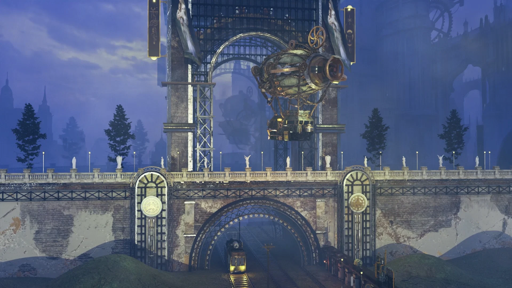
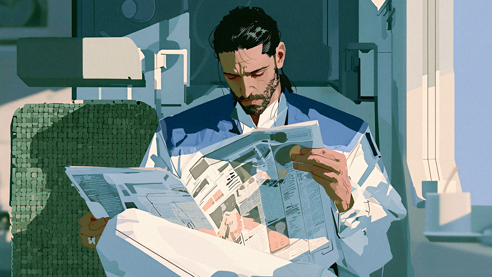
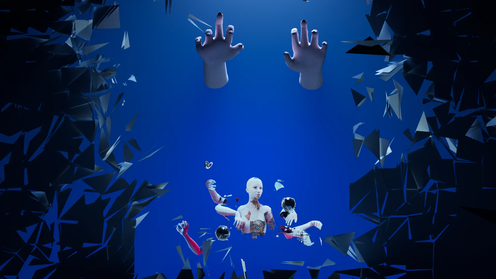
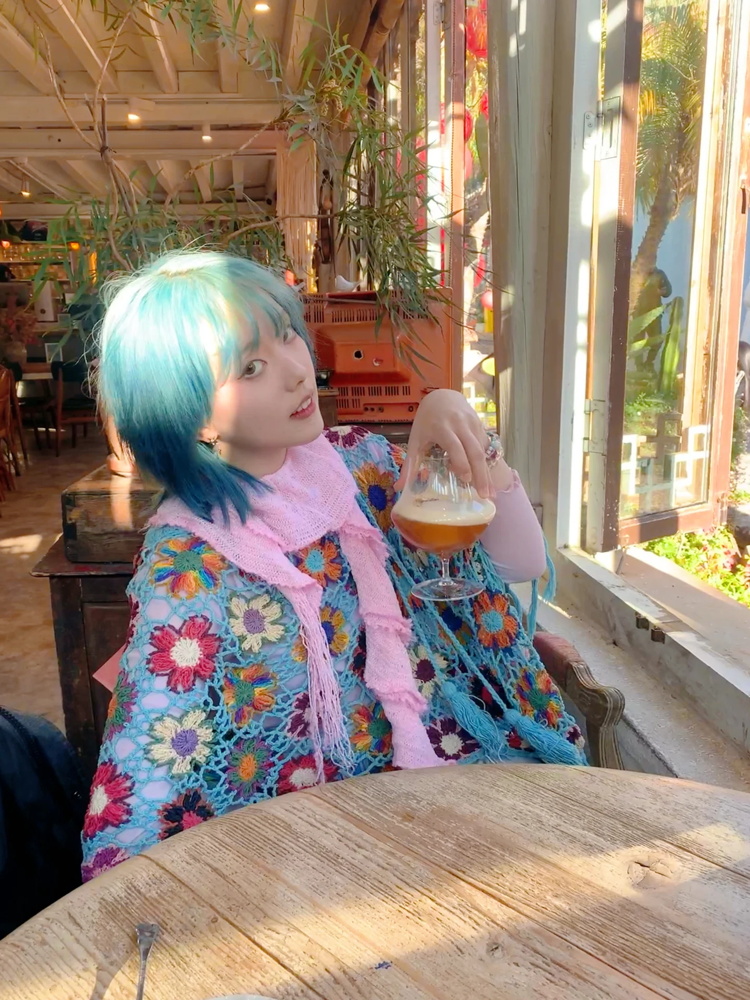

影像 / 空间 / 交互
Created and Designed by 丁佳琪
Contents
作品目录 / 2026
/ Portfolio of 丁佳琪 in 2026 | 个人设计作品集 /
Created and Designed by 丁佳琪
01.
AI 游戏AI game

潘多拉PANDORA
在被封存的情绪里，
听见自己的回声。
一款融合场景探索、节奏调律与剧情演出的叙事音游。通过角色、环境与音乐，走进情绪被封存的未来社会。
- 体验
- 剧情探索 · 节奏交互 · 多章节演出
- 我的工作
- 游戏概念、玩法与叙事规划、交互原型、AI 视听内容制作
- 创作方式
- AI 图像 / AI 视频 / AI 音乐 / Vibe Coding
玩法介绍 GAMEPLAY
三段游戏实录 · 点击封面观看
游戏画面与视觉 IN-GAME VISUALS
从界面、角色到场景演出
PANDORA / VISUAL DEVELOPMENT
让故事，发生在画面里。
以蓝、白与金色串联界面和角色视觉，在未来机械空间中展开人物的行动与情绪。
点击视频观看动画
点击下方图片查看完整画面

后人类样本
三维影像 / 机械飞升About me / 个人简介
丁佳琪Ding Jiaqi

就读于中央戏剧学院演艺影像设计专业。我的创作围绕三维场景、舞台影像、AI 内容与互动体验展开，关注空间、画面和音乐如何共同讲述故事。
熟悉三维场景制作、材质贴图、实时渲染与视觉后期，也使用 AI 图像、视频和音乐工具完成概念探索与内容制作。通过 Vibe Coding，把视觉创意推进到可交互、可体验的原型。
教育经历 EDUCATION
中央戏剧学院2024—2028
本科 · 演艺影像设计
实习经历 INTERNSHIP
腾讯 · 游戏策划实习生 AI 游戏 / 独立项目制作方向
以相对独立的制作模式参与叙事音游开发，负责游戏概念、核心玩法、关卡流程、叙事结构与交互体验规划，结合 AI 视听生成与 Vibe Coding 完成玩法原型验证和快速迭代，并协同美术、程序等环节推进可玩 Demo。
项目经历 PROJECT EXPERIENCE
演出与公共艺术项目 视觉设计 / 现场执行
参与庄心妍、郭俊辰演出 VJ 影像设计，全总文工团音乐会影像内容编排与现场播放，以及戏剧《千里行》多媒体设计与播控。参与桂林艺术节展板与艺术装置设计，澳门旅博会护照本封面视觉设计，时差岛潮汕主题视频特效制作。
创作工具 TOOLKIT
- 三维与实时视觉
- Maya · Blender · ZBrush · Substance 3D Painter · Unreal Engine 5
- 视觉与舞台
- Photoshop · After Effects · Arena
- AI 创作与交互
- Midjourney · Seedance · Veo · Nano Banana · Suno · Cursor · Codex
项目合作 / 设计机会
2606611888@qq.com ↗